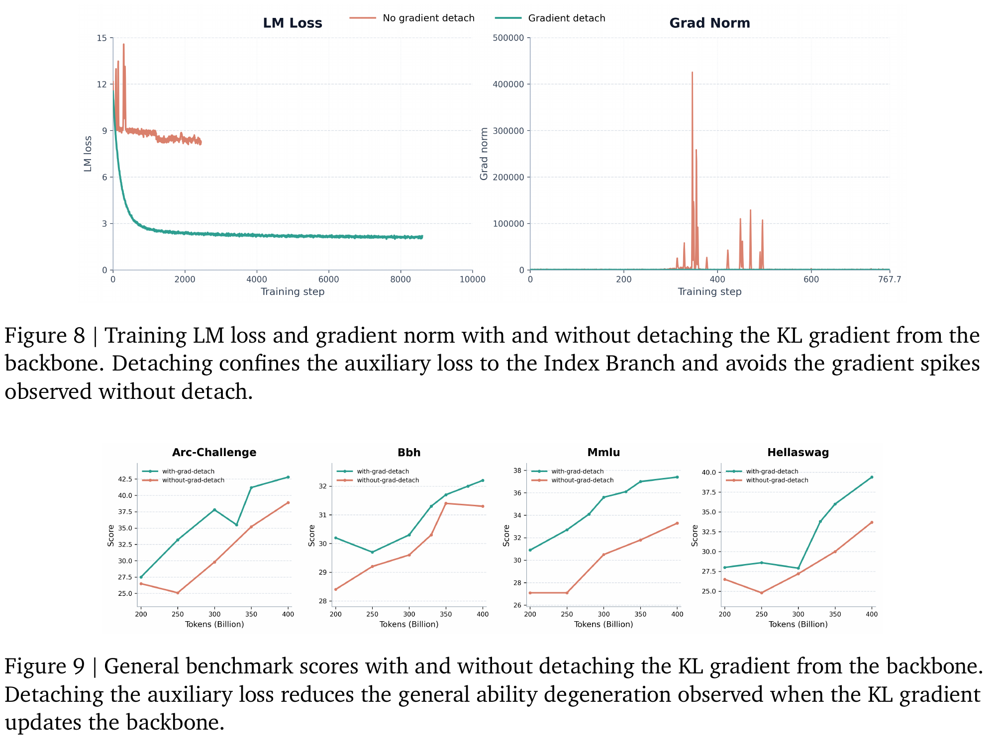
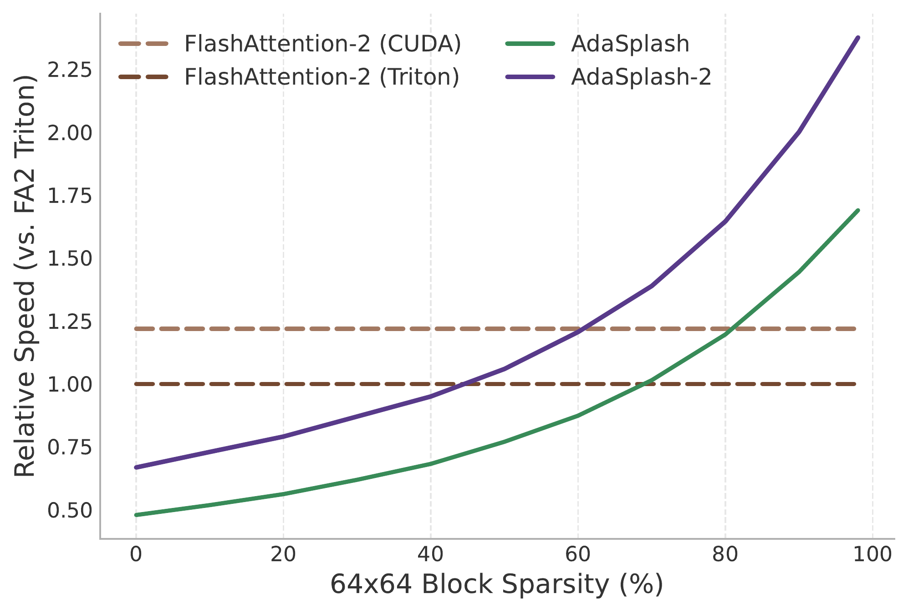

Sparse Attention · Part II
How sparse attention runs fast and how frontier labs do it
Part I developed the mathematics of sparse attention: how a normalizer produces exact zeros, how its support changes with the scores, and what gradients it provides. Here I want to follow those choices into an implementation. DeepSeek’s DSA and MiniMax’s MSA show how to train a separate selector when the task loss cannot differentiate through its indices. Then we will look at how thresholds and a few bit operations let a kernel skip entire blocks of work. The broader literature is collected in a reference table at the end.
Table of Contents
Notation follows Part I: scores \(\mathbf z\in\mathbb R^n\), attention weights \(\mathbf p\), support \(S=\{i:p_i>0\}\), and \([t]_+=\max\{t,0\}\). For \(\alpha>1\), \(\alpha\text{-entmax}(\mathbf z)=[(\alpha-1)\mathbf z-\tau\mathbf1]_+^{1/(\alpha-1)}\), with \(\tau\) chosen so that the weights sum to one. Other notation is introduced as needed.
1. Introduction
There are two practical questions behind an input-dependent sparse attention layer. How does the model learn what to select? And once it has selected something, which operations can the implementation avoid? A good answer to the first does not automatically give a good answer to the second.
Recall the distinction from Part I §4.3. A hard top-\(k\) mask stays constant under small changes to the scores, until a ranking swaps. Its membership has zero derivative away from ties. The attention weights computed within that selection can still receive gradients. This becomes a problem for a separate indexer whose only contribution to the task is a list of selected indices: that route supplies no gradient to its parameters. Section 3 explains how two large models train such an indexer anyway.
On the implementation side, writing zeros into an attention matrix does not save work if the kernel still loads and multiplies every entry. Section 4 follows the additional steps: find candidates, identify empty tiles, record a compact mask, and use that mask to change which tiles the kernel visits. This is also where the cost of finding the sparsity has to be paid.
2. When does sparsity enter the model?
Papers use “sparse attention” for several different interventions. Some take a pretrained dense model and skip tokens at inference. Others train the model with a restricted attention pattern. I find it useful to distinguish them by the computation they are trying to reproduce.
Training-free methods aim to accelerate an existing model without retraining it. For finite logits, softmax assigns positive weight to every causally visible, unmasked token. Dropping any of those tokens and renormalizing changes the distribution. If the discarded mass is \(\delta<1\) and every value vector has norm at most \(B\), the output error is bounded by \(\|\mathbf o-\tilde{\mathbf o}\|\le 2B\delta\) (Duarte et al., 2026). This is a tight worst-case upper bound. It does not imply a positive error for every input: identical value vectors, for example, give the same output under any normalized weighting. The practical question is how much accuracy can be retained at a given cost.
Models trained with sparse attention learn under the restriction they will use at inference. DSA and MSA select tokens or blocks and normalize within that selection. Entmax instead produces sparse weights through the normalizer itself. In either case, an exact implementation means reproducing that model’s attention operator; it does not mean matching an unrestricted softmax layer. For entmax, recovering every token in the support is sufficient to reproduce full-context entmax attention (§4.2).
There is also a trained retrofit category. SeerAttention learns block gates from a frozen model’s attention maps (Gao et al., 2025); DuoAttention learns which heads need the full cache (Xiao et al., 2024); Dynamic Memory Compression learns how to compress an existing model’s cache (Nawrot et al., 2024). These methods use training, but their starting point and reference remain a dense model. Calling them training-free would hide a meaningful difference.
These categories describe when sparsity enters the model, rather than ranking methods by quality. They also leave open how a selector is trained. A model can train with sparse attention throughout most of its training run while its selector learns from a separate auxiliary objective.
3. Detach and distill
DeepSeek-V3.2’s DSA and MiniMax’s MSA both split attention into an indexer and a main attention branch. The indexer decides which keys the main branch can see. During training, the main branch also provides a target distribution for an auxiliary loss that trains the indexer. Let us follow the forward pass first, then trace the two losses.
3.1 DeepSeek-V3.2’s DSA
For a query at position \(t\), DSA’s lightning indexer scores every token \(s\le t\) in the causal prefix. It uses its own query and key projections, with a small number of indexer heads and FP8 computation. Their scores are combined as
$$I_{t,s}=\sum_{j=1}^{H^I}w^I_{t,j}\, \mathrm{ReLU}\!\left(\mathbf q^I_{t,j}\cdot\mathbf k^I_s\right).$$Here \(j\) indexes the indexer heads and \(w^I_{t,j}\) is a query-dependent weight. DSA keeps the indices of the top \(k=2048\) scores, or the whole prefix when it is shorter. The main attention branch then reads the corresponding KV entries and computes attention using its own scores. The indexer scores choose the entries; they are not the weights used to average their values. In DeepSeek-V3.2 this is implemented on top of multi-head latent attention (MLA), with the selected KV entries shared across query heads (DeepSeek-AI, 2025, §2.1).
That separation explains the training problem. Changing an indexer score without changing the selected indices leaves the main branch’s output unchanged. To train the indexer, DSA first runs a dense warm-up: freeze the backbone, keep full attention, and teach the indexer to match the main attention distribution. For each query, sum the main branch’s attention probabilities across heads and normalize over the visible prefix. Call this teacher \(p^{\mathrm{dense}}_{t,:}\).
$$\mathcal L^I_{\mathrm{warm}}= \sum_t D_{\mathrm{KL}}\!\left(p^{\mathrm{dense}}_{t,:}\,\|\, \operatorname{softmax}(I_{t,:})\right).$$After warm-up, selection is enabled and the backbone trains on language modeling. The indexer keeps its KL objective, now over the selected set \(\mathcal S_t\):
$$\mathcal L^I_{\mathrm{sparse}}= \sum_t D_{\mathrm{KL}}\!\left(p^{\mathrm{sel}}_{t,:}\,\|\, \operatorname{softmax}(I_{t,\mathcal S_t})\right).$$Both distributions in this expression sum to one on \(\mathcal S_t\). The teacher \(p^{\mathrm{sel}}\) comes from the main branch’s attention over the selected tokens; it is not an unnormalized slice of the dense warm-up teacher. The paper also detaches the indexer’s input, so the KL loss updates the indexer without updating the backbone. The language-modeling loss updates the main model. It can affect what the indexer learns indirectly, by changing the hidden states and teacher it receives at later steps.
Selection reduces the main branch’s attention work, but the indexer still scans the prefix for every query. Its scoring cost remains quadratic over a full sequence, with a smaller constant. This distinction will matter when we return to selection kernels in §4.4. The released inference code contains both branches.
3.2 MiniMax’s MSA
MSA makes the selection at block granularity. Its main branch uses grouped-query attention (GQA): several query heads share one key/value head. For each query and GQA group, an index query scores the visible tokens against a shared index key head. The maximum token score in each block becomes that block’s score. Top-\(k\) then selects blocks, and every query head in the group attends to their causally visible tokens using its own main-branch attention weights.
The paper uses blocks of 128 tokens and selects 16 blocks per group. One slot is reserved for the local block containing the query; the indexer chooses the others. Thus the main branch sees at most 2048 tokens per query and group. The token-scoring scan is still there, but the downstream kernel receives regular blocks and can share their KV loads across the group’s query heads (Lai et al., 2026, §§3–4).
As in DSA, the index projections need an auxiliary loss. After a dense warm-up, MSA computes the KL over tokens in the selected blocks. For query \(i\) and group \(r\), let \(P^{\mathrm{idx},(r)}_{i,:}\) be the softmax of the indexer’s token scores on that set. Its teacher \(P^{(r)}_{i,:}\) averages the main branch’s per-head probabilities within the group, after each head has normalized over the same set. With \(N\) queries and \(H_{kv}\) groups, the loss is
$$\mathcal L_{\mathrm{KL}}= \frac{1}{NH_{kv}}\sum_{i=1}^{N}\sum_{r=1}^{H_{kv}} D_{\mathrm{KL}}\!\left(\operatorname{stopgrad}(P^{(r)}_{i,:})\,middle\|\, P^{\mathrm{idx},(r)}_{i,:}\right).$$There are two gradient paths to block. Detaching the teacher prevents this loss from updating the main attention projections through the target. Detaching the hidden states \(\mathbf X\) at the indexer input prevents the loss from reaching the backbone through the student:
$$\mathbf Q^{\mathrm{idx}}=\operatorname{stopgrad}(\mathbf X)\mathbf W_q^{\mathrm{idx}}, \qquad \mathbf K^{\mathrm{idx}}=\operatorname{stopgrad}(\mathbf X)\mathbf W_k^{\mathrm{idx}}.$$Together, these choices confine the KL gradient to the two index projections. They do not freeze the backbone: it continues to learn from the language-modeling loss.
The forward pass and the two learning signals
Main attention also gets its own Q, K and V from X.
MSA’s ablations make the reason for input detachment concrete. On the 10B-parameter pilot, allowing the KL gradient into the backbone caused divergence at larger KL coefficients and gradual short-context regression even at stable coefficients. The authors attribute the latter to the backbone making its attention easier to imitate, rather than the indexer learning a better approximation (App. B.3).

A separate pilot ablation added an attention output to the index branch, giving it a direct path to the language-modeling loss. That helped short-context ability, but without KL supervision it selected poorly for long-context retrieval. This extra output is not part of the final recipe: with indexer warm-up, the full-scale model could remove it while retaining KL alignment and detachment. Keeping the pilot architecture separate from the final one helps explain what those ablations actually establish.
3.3 Precedents and remaining questions
Auxiliary supervision has precedents. SeerAttention trains block gates to imitate a frozen model’s attention maps, while DuoAttention distills a choice of full-cache versus streaming heads (§2). Other architectures reuse representations that already receive a task gradient: NSA derives block importance from its compressed-attention branch (Yuan et al., 2025). InfLLM-V2 uses parameter-free compression for selection (Zhao et al., 2026), and MoBA scores pooled key blocks with the query, without a separate learned gate (Lu et al., 2025). Their underlying representations can learn even though hard selection itself has no membership gradient.
I find detached alignment a reasonable response to that limitation. MSA provides evidence for the stability it buys. It also leaves a distinction I care about: the indexer is explicitly trained to imitate attention, while the task loss trains the backbone. Entmax offers a different design when its continuous sparse weights participate in the output: the task loss can differentiate through those weights. It still has zero local gradients outside the support, as Part I explained. Replacing only the indexer’s score transform and then taking hard indices would not remove the obstruction.
One question remains for me: how does the teacher’s concentration affect the usefulness of the alignment signal as context grows? Part I’s bounded-spread argument applies to a teacher normalized over a growing full context, as in dense warm-up. During sparse training, DSA and MSA normalize over selected tokens, whose number is capped; the same full-context conclusion does not follow. Measuring the teacher’s entropy and selection quality separately in these stages would help answer the question. The bound alone does not show that either system learns from a progressively flattening teacher at its operating lengths.
4. How sparsity becomes skipped work
Suppose an attention row has many exact zeros. A dense matrix multiplication will still process them. To save time, the implementation needs a way to identify work it can omit and a cheap representation of that decision. We can follow this from tiled attention to a small block mask.
4.1 Start from tiled attention
The familiar expression is \(\mathbf O=\mathbf P\mathbf V\), with \(\mathbf P=\pi(\mathbf Q\mathbf K^\top/\sqrt d)\). A straightforward implementation writes both the score matrix and the normalized weights to GPU high-bandwidth memory (HBM). For a sequence of length \(n\), each matrix has \(n^2\) entries. Reading them back can cost more than the elementwise operations performed on them.
FlashAttention avoids these intermediates. It loads tiles of Q, K and V, computes score and weight tiles on chip, and maintains normalization statistics and an output accumulator. The full score and probability matrices never need to be stored in HBM (Dao et al., 2022). A sparse kernel therefore has to improve on an implementation that already avoids those writes.
Three ways to execute attention
Tan: HBM. Teal: computation on chip. Purple: compact metadata.
During training and prefill, many queries can reuse loaded keys and values. Matrix throughput, on-chip communication and scheduling can all limit performance. During decoding with small batches, there is less reuse and reading the KV cache often dominates. The attention architecture and batch size change this balance. Sparsity can save both arithmetic and memory traffic; which saving matters most depends on the workload.
4.2 Find a safe candidate set
For entmax, a useful starting point is simple: keeping extra zero-weight tokens does not change the answer. If \(S\) is the full-context entmax support and a candidate set \(M\) contains \(S\), computing entmax on \(M\) and filling excluded positions with zeros returns the original distribution (Treviso et al., 2022). The candidate selector can be conservative. Extra candidates cost work; a missed support token changes the distribution.
Why a support superset preserves entmax
Let \(a_i=(\alpha-1)z_i\), and let \(\tau^\star\) solve \(\sum_i[a_i-\tau]_+^{1/(\alpha-1)}=1\). For \(M\supseteq S\), all excluded terms are zero at \(\tau^\star\), so the restricted sum is also one. Uniqueness of the normalizing threshold gives the same weights on \(M\). Extending by zeros gives the same vector in \(\mathbb R^n\). This is exactness relative to full-context entmax.
How do we get such candidates? One option is a threshold estimate \(\tau_h\le\tau^\star\). Testing \((\alpha-1)z_i>\tau_h\) can keep too many tokens, but cannot reject one above the true threshold. AdaSplash-2 obtains this estimate from a small histogram of scores built on chip. It solves the normalization equation on the histogram, then refines the threshold using the actual scores (Gonçalves et al., 2026). The histogram is a cheaper initialization. Its approximate weights are not the final answer.
The histogram bound and a worked example
Work with scaled scores \(a_i=(\alpha-1)z_i\). Shift them by a common constant to obtain \(u_i=a_i-\max_j a_j+1\), so \(\max_i u_i=1\). The shifted true threshold lies in \([0,1)\); scores below zero cannot be active. Partition \([0,1]\) into \(B\) bins of width \(h=1/B\), replacing each nonnegative score by its bin’s left edge: \(\tilde u_i=\min(\lfloor Bu_i\rfloor,B-1)/B\). The histogram stores how many scores share each replacement value. Solve its small normalization problem for \(\tau_h\).
$$\tau^\star-h\le\tau_h\le\tau^\star.$$To see this, write \(r=1/(\alpha-1)\). Every retained score satisfies \(u_i-h\le\tilde u_i\le u_i\). Thus the histogram mass at \(\tau^\star\) is at most one, and at \(\tau^\star-h\) it is at least one. The latter still holds when negative scores are omitted: they contribute zero to the original normalization at \(\tau^\star\ge0\). Monotonicity places the histogram root between these endpoints.
The non-strict inequality matters for the capped final bin: \(u_i=1\) is rounded down by exactly \(h\). With one score equal to one, \(\tau^\star=0\) and \(\tau_h=-h\). The bound therefore includes its endpoints. Here \(\tau\) is in the shifted coordinates; undo the same shift when comparing it with the original scores. A numerical solver also needs a conservative bound or appropriate tolerance if its estimate is used to reject candidates.
A coarse estimate brackets the true threshold
The same 24 shifted scores, α = 1.5, with 4, 8 and 16 bins. Scroll horizontally on small screens.
The interactive entmax and AdaSplash explainer develops the solver and its refinements in more detail.
Exact top-\(k\) admits a related conservative filter: the \(k\)-th largest score of a subset containing at least \(k\) elements cannot exceed the global \(k\)-th largest score. Keep all candidates at or above that cutoff, then perform exact selection among them, with a consistent rule for ties. Unlike entmax, keeping extra tokens in the final attention set would change the intended top-\(k\) operator.
Pruning dense softmax has a different guarantee. A score gap from the maximum gives a relative-weight cutoff: \(z_i\ge m-\eta\iff p_i/p_{\max}\ge e^{-\eta}\), where \(m=\max_jz_j\). This can guide approximate skipping, as in BLASST. Each omitted weight is still positive, and many small weights can carry substantial total mass. A per-token cutoff alone does not bound that total independently of context length; it is the accumulated discarded mass that enters §2’s error bound.
4.3 Turn support into a block mask
GPU matrix instructions operate on tiles. Suppose a query block \(i\) interacts with key block \(j\), producing a weight tile \(\mathbf P_{ij}\). If every entry is zero, its contribution \(\mathbf P_{ij}\mathbf V_j\) is zero too. We can record that fact with one bit:
$$M_{ij}=\mathbf1\{\text{some entry of }\mathbf P_{ij}\text{ is nonzero}\}.$$A conservative support test may also mark extra tiles active; the final weights still determine their contribution. Either way, setting a bit requires only an “any active entry?” reduction on a tile the kernel is already examining. There is no need to store all its probabilities just to remember whether the tile should be visited later.
From active entries to a word of bits
Each square is a query–key tile. Dots mark nonzero entries; blank tiles can be skipped.
01001001 = 73.
Pack 32 consecutive key-block flags into one unsigned word. For block \(j\), the word index is \(\lfloor j/32\rfloor\) and the bit position is \(j\bmod32\). To mark that block, OR the word with \(1\ll(j\bmod32)\). For each query block, the output pass then walks the set bits:
for w in range(ceil_div(num_key_blocks, 32)):
word = load_uint32(mask[query_block, w])
count = popcount(word) # number of active tiles
for rank in range(count):
bit = nth_set_bit(word, rank) # zero-based rank among 1-bits
j = 32 * w + bit
accumulate_attention_tile(query_block, j)
Here nth_set_bit names the operation, rather than a Python builtin. AdaSplash-2’s
public Triton kernel
uses popc to count bits and a short inline-PTX fns helper to locate them.
In our example the count is three, and the loop visits blocks 0, 3 and 6. An empty word executes no
tile iterations. Unused bits in the final word must remain zero.
There is still overhead: constructing the mask, loading its words, and traversing the set bits. With \(T_r\) query blocks and \(T_c\) key blocks, storage is \(4T_r\lceil T_c/32\rceil\) bytes per batch item and attention head. Traversal inspects those words plus the active tiles. What disappears for an empty tile is its K/V loading, score recomputation and value accumulation in the output pass. Earlier scans used to discover its emptiness still count.
The same support also helps in backward. Entmax’s score gradients vanish outside its support (Part I §4.3), so empty tiles contribute nothing to the Q, K and V gradients. The kernel can reuse the mask, transposing its layout where needed, to skip those tile calculations. This avoids their contributions; gradient outputs still need to be accumulated and written for the active work.
This is why token sparsity and block sparsity must be measured separately. One nonzero in every tile leaves every tile active, however sparse the matrix is overall. Smaller tiles can expose more empty blocks, but can also reduce data reuse and matrix throughput. The bit operations make traversal cheap; the pattern and tile size determine how much useful work remains to skip.
4.4 Account for selection costs
Return to DSA. Even if its main branch attends to only 2048 tokens, the indexer must score the prefix and select them. Producing a large score tensor, writing it to HBM, then reading it for top-\(k\) adds traffic before sparse attention starts. Fusing scoring with selection avoids that intermediate and can reduce candidate processing while the scores are already on chip.
LiteTopK gives a concrete example. It takes token identities that appeared frequently in the previous chunk’s selections and scores them again for each current query. Their current scores initialize a histogram and a conservative cutoff. During the full scan, only candidates passing that cutoff are buffered; histogram updates tighten the filter as more scores arrive. At the end, candidates above the final threshold bin are accepted, and exact selection resolves the remaining slots within that bin. The sample makes the filter useful early; the one-sided bound, rather than similarity between chunks, protects the true top-\(k\).
Other methods reduce different costs. HISA scores pooled blocks first and rescans tokens only in promising blocks, potentially missing tokens that a full scan would select. IndexCache reuses indices across layers, approximating a fresh selection. StreamIndex organizes scoring and top-\(k\) as streaming partition-and-merge operations to limit intermediate memory. These are different choices about scan cost, memory and selection fidelity.
For entmax, the accounting includes threshold scans and mask construction before the sparse output and backward passes. The runtime curve below illustrates the consequence: when few blocks are empty, the extra work is not recovered. As more blocks become skippable, it is. This is the useful lesson from the benchmark; a sparsity percentage by itself is not a speedup prediction.

5. The landscape
The table collects the methods discussed here alongside related architectures and KV-cache policies. It separates models, trained retrofits and serving kernels because they solve different problems. The reference column identifies what an implementation aims to reproduce. It is not an accuracy ranking.
Explore the full methods table
| Method | Stage | Granularity | Selection signal | Query-aware | Reference / exactness | Key idea |
|---|---|---|---|---|---|---|
| Training-free — retrofit sparsity onto a frozen softmax model, no retraining | ||||||
| StreamingLLM | decode | token | first tokens + recent window | no | approximates dense softmax | retain initial sink tokens and a recent window |
| H2O | decode | token | accumulated attention (heavy hitters) | no | approximates dense softmax | greedy heavy-hitter eviction, near-optimal only if attention is submodular |
| TOVA | decode | token | lowest current attention | yes (at eviction) | approximates dense softmax | decoder as a multi-state RNN |
| FastGen | prefill→decode | token / head | per-head structure profile | partly | approximates dense softmax | cheapest eviction policy per head |
| SnapKV | prefill→decode | token | end-of-prompt voting window | yes | approximates dense softmax | observation window picks the keepers |
| PyramidKV | prefill | token | attention, non-uniform layer allowance | yes | approximates dense softmax | pyramidal per-layer allocation |
| Quest | decode | page | per-page min/max bound on \(\mathbf q^\top\mathbf k\) | yes | approximates dense softmax | query-aware top-\(k\) pages, no recall guarantee |
| Loki | decode | token | PCA-subspace key ranking | yes | approximates dense softmax | score keys in a low-rank subspace |
| ShadowKV | decode | chunk | low-rank keys, CPU-offloaded values | yes | approximates dense softmax | keep everything, re-select every step |
| MInference | prefill | block | offline head pattern + online index | yes | approximates dense softmax | A-shape / Vertical-Slash / Block-Sparse patterns |
| FlexPrefill | prefill | block | per-input pattern switch + cumulative threshold | yes | approximates dense softmax | choose the pattern per input |
| SampleAttention | prefill | block / structured | sampled cumulative attention | yes | approximates dense softmax | adaptive structured sparsity for TTFT |
| XAttention | prefill | block | antidiagonal block score | yes | approximates dense softmax | cheap block-importance estimate |
| SpargeAttention | prefill + decode | block | two-stage online filter | yes | approximates dense softmax | model-agnostic: language, image, video |
| MagicPIG | decode | token (sampled) | LSH importance sampling | yes | approximates dense softmax | sample, don’t select; near-unbiased estimate |
| Twilight / Tactic / Double-P | decode | token / block | adaptive top-\(p\) allowance | yes | approximates dense softmax | data-dependent allowance, not a fixed \(k\) |
| SALE | prefill | block | 4-bit score estimate, calibrated threshold | yes | approximates dense softmax | low-bit scan gates blocks by calibrated score |
| FFD | decode | block | 2-bit thumbnail vs. pseudo-max, top-δ | yes | approximates dense softmax | relative-score filtering with higher-precision refinement |
| BLASST | prefill + decode | block | running-max gap \(\ln\lambda\) | yes | approximates dense softmax | skip blocks inside FlashAttention’s loop (§4.2) |
| TileSparse | decode (MLA) | compute tile | tile-level threshold, AutoTuner | yes | approximates dense softmax | choose tiles to balance sparsity and arithmetic intensity |
| Elastic Attention | test time | head | per-head sparsity-ratio routing | partly | approximates dense softmax | adapt each head’s sparsity without retraining |
| LessIsMore | decode (reasoning) | token | cross-head unified selection | yes | approximates dense softmax | one shared token set across heads for reasoning |
| Serving kernels for trained sparse models; engineering the scan, with semantics shown per row | ||||||
| LiteTopK | prefill | token (top-\(k\)) | rescore frequent prior-chunk token IDs; histogram filter | yes | exact top-\(k\) | fuse scoring, candidate filtering and final selection (§4.4) |
| HISA | prefill | block → token | pooled block keys, re-score survivors | yes | approximates full-scan selection | hierarchical scan pruning (§4.4) |
| StreamIndex | prefill | token (top-\(k\)) | chunked partition–merge | yes | streaming top-\(k\); empirical set agreement | avoid the full score tensor (§4.4) |
| IndexCache | prefill | layer | cross-layer index reuse | yes | approximates fresh indices | reuse indices instead of selecting at every layer (§4.4) |
| Trained retrofit — adapt an existing dense model using additional training | ||||||
| SeerAttention (-R) | prefill (R: decode) | block | self-distilled learned gates | yes | approximates dense softmax | learn the model’s own sparsity, backbone frozen (§3.3) |
| DuoAttention | decode | head | learned retrieval/streaming split | partly | approximates dense softmax | full cache only for retrieval heads (§3.3) |
| DMC | decode | token | learned append-vs-merge | partly | approximates dense softmax | retrofit-trained eviction and merging |
| Models trained with sparse attention — the restriction is part of the architecture | ||||||
| Sparse Transformer | train | block | fixed strided + local | no | fixed pattern | \(O(n\sqrt n)\) factorized attention |
| Longformer / Big Bird | train | block | window + global (+ random) | no | fixed pattern | \(O(n)\); Big Bird is a universal approximator |
| Reformer | train | bucket | angular LSH hashing | yes | content-native | attend within a hash bucket |
| Routing Transformer | train | cluster | online spherical \(k\)-means | yes | content-native | attend within the same centroid |
| Landmark Attention | train | block | landmark tokens + grouped softmax | yes | block-native | trained block retrieval, the 2023 ancestor |
| NSA | train | block | compress + select + slide, gated | yes | block-native | hardware-aligned three-branch attention |
| MoBA | train | block | MoE-style top-\(k\) over KV blocks | yes | block-native | attention as expert routing |
| InfLLM-V2 | train | block | dense↔sparse switchable | yes | block-native | smooth short-to-long adaptation |
| NOSA | train | block | offloading-aware selection | yes | block-native | constrains CPU–GPU transfer volume by design |
| HSA / RAMba | train | chunk | token-to-chunk relevance, hierarchical | yes | block-native | hierarchical retrieval of distant memory chunks |
| DSA | train | token (top-\(k\)) | FP8 lightning indexer, detached KL (§3.1) | yes | native top-\(k\) | trained sparse attention in a frontier model |
| MSA | train | block | trained block scoring on GQA, detached KL (§3.2) | yes | block-native | group-shared block selection and sparse attention |
| Entmax operators, models and implementations; support sparsity at token or block granularity | ||||||
| sparsemax / α-entmax | train | token | input-dependent threshold \(\tau\), exact zeros | yes | full-context entmax operator | differentiable, input-adaptive sparsity (Part I) |
| ASEntmax | train | token | α-entmax + learned \((\delta+\beta(\log n)^{\gamma})\) scaling | yes | full-context entmax operator | length-generalizing sparse attention (Part I §3.3) |
| AdaSplash / AdaSplash-2 | train | token → block-skip | entmax support; histogram initialization in v2; bitmask (§§4.2–4.3) | yes | full-context entmax operator | compute entmax with sparse output and backward passes |
| DashAttention | train | block (variable count) | differentiable entmax chunk routing | yes | native, entmax-routed | entmax decides how many blocks, per query (Part I §4.1) |
| EntmaxKV | decode | token | support-aware page selection via bounds (§4.2) | yes | full-cache entmax if support is covered | support recovery is the target; measured recall can be below 1 |
Table 1. “Approximates dense softmax” means the reference is an existing dense attention computation; it does not imply an unavoidable positive output error on every input. “Fixed pattern,” “block-native” and “content-native” describe restrictions used during model training. “Full-context entmax operator” identifies a different normalizer, not equality to softmax. Kernel exactness is understood up to numerical precision and solver tolerance. LiteTopK targets exact selection under its indexer scores; HISA and IndexCache can change that selection. EntmaxKV reproduces full-cache entmax when its candidate set covers the support; heuristic candidate policies need not guarantee this.
Evaluation needs the same distinctions. The Sparse Frontier finds useful accuracy–efficiency tradeoffs for inference-time sparsity, with tolerable sparsity depending on the task and sequence length (Nawrot et al., 2026). SCBench tests cache reuse across requests and turns, exposing limitations that a single retrieval query can miss. And Goldman et al. (2024) distinguish locating a small piece of evidence from tasks that require processing information distributed across the context. A strong needle-retrieval result does not settle the latter.
There is a scale difference in the evidence discussed here too. AdaSplash-2 reports a 1B-parameter entmax language model, while MSA evaluates a 109B-parameter model. The kernel results make entmax practical to experiment with, but they do not establish its behavior at MSA’s model scale. I would like to see that gap tested, alongside comparisons that include selection, normalization, output and backward costs under matched hardware and workloads.
6. Conclusion
DSA and MSA make a separate indexer trainable through attention alignment, while keeping that auxiliary gradient out of the backbone. Their design addresses a specific difficulty with discrete selection. Part I’s sparse normalizers offer another route when the task uses their continuous weights directly. These choices determine what learns, what is selected, and which attention computation the kernel must reproduce.
Once the operator is chosen, the implementation has to turn its support into skipped work. Conservative candidates can protect the result while a threshold is refined. A block mask records where work remains, and a few bit operations let later passes visit those blocks directly. The payoff depends on how much block sparsity the model produces and what it costs to find it. That connection between the attention rule and the work the kernel actually performs is what I want readers to take from this part.
References
In order of first appearance, including the expandable methods table. Links point to public papers and proceedings; preprints are marked as such.
- Duarte, Couceiro, Treviso. EntmaxKV: Support-Aware Decoding for Entmax Attention. arXiv preprint, 2026.
- Gao, Zeng, Du, Cao, Zhou, Qi, Lai, So, Cao, Yang, Yang. SeerAttention: Self-Distilled Attention Gating for Efficient Long-Context Prefilling. NeurIPS 2025 (arXiv title: Learning Intrinsic Sparse Attention in Your LLMs).
- Xiao, Tang, Zuo, Guo, Yang, Tang, Fu, Han. DuoAttention: Efficient Long-Context LLM Inference with Retrieval and Streaming Heads. ICLR 2025.
- Nawrot, Łańcucki, Chochowski, Tarjan, Ponti. Dynamic Memory Compression: Retrofitting LLMs for Accelerated Inference. ICML 2024.
- DeepSeek-AI. DeepSeek-V3.2: Pushing the Frontier of Open Large Language Models. arXiv preprint, 2025.
- Lai, Xu, Yang, Chen, Xu, Zeng, Li, Sun, Zhu, Zhang, Hu, Li, Gao, Li, Zhu, Zhou, Zhao. MiniMax Sparse Attention. arXiv preprint, 2026.
- Yuan, Gao, Dai, Luo, Zhao, Zhang, Xie, Wei, Wang, Xiao, Wang, Ruan, Zhang, Liang, Zeng. Native Sparse Attention: Hardware-Aligned and Natively Trainable Sparse Attention. ACL 2025.
- Zhao, Zhou, Su, Xiao, Li, Li, Zhang, Zhao, Li, Huang, Sun, Han, Liu. InfLLM-V2: Dense-Sparse Switchable Attention for Seamless Short-to-Long Adaptation. ICLR 2026.
- Lu, Jiang, Liu, et al. MoBA: Mixture of Block Attention for Long-Context LLMs. NeurIPS 2025.
- Dao, Fu, Ermon, Rudra, Ré. FlashAttention: Fast and Memory-Efficient Exact Attention with IO-Awareness. NeurIPS 2022.
- Treviso, Góis, Fernandes, Fonseca, Martins. Predicting Attention Sparsity in Transformers. SPNLP @ ACL 2022.
- Gonçalves, Pitorro, Niculae, Ponti, Li, Martins, Treviso. AdaSplash-2: Faster Differentiable Sparse Attention. ICML 2026.
- Yuan, Shinn, Xu, Cui, Klimiashvili, Xiao, Zheng, Li, Zhou, Ye, You, Zheng, Brown, Wang, Hoehnerbach, Cai, Demouth, Owens, Hu, Han, Liu, Mao. BLASST: Dynamic Blocked Attention Sparsity via Softmax Thresholding. MLSys 2026.
- Yin, Gao, Li, Yin, Cong. LiteTopK: Exploiting the Curse of Dimensionality for a Fused Indexer-TopK Kernel in Long-Context Sparse Attention. arXiv preprint, 2026.
- Xu, Meng, Jiang, Wang, Zhou, Wang, Wu, Pan, Tang, Pei, Liu, Yin, Sun, Zhang. HISA: Efficient Hierarchical Indexing for Fine-Grained Sparse Attention. arXiv preprint, 2026.
- Bai, Dong, Jiang, Lv, Du, Zeng, Tang, Li. IndexCache: Accelerating Sparse Attention via Cross-Layer Index Reuse. arXiv preprint, 2026.
- Jaber, Jaber. StreamIndex: Memory-Bounded Compressed Sparse Attention via Streaming Top-k. arXiv preprint, 2026.
- Xiao, Tian, Chen, Han, Lewis. Efficient Streaming Language Models with Attention Sinks. ICLR 2024.
- Zhang, Sheng, Zhou, Chen, Zheng, Cai, Song, Tian, Ré, Barrett, Wang, Chen. H2O: Heavy-Hitter Oracle for Efficient Generative Inference of Large Language Models. NeurIPS 2023.
- Oren, Hassid, Yarden, Adi, Schwartz. Transformers are Multi-State RNNs. EMNLP 2024.
- Ge, Zhang, Liu, Zhang, Han, Gao. Model Tells You What to Discard: Adaptive KV Cache Compression for LLMs. ICLR 2024.
- Li, Huang, Yang, Venkitesh, Locatelli, et al. SnapKV: LLM Knows What You Are Looking for Before Generation. NeurIPS 2024.
- Cai, Zhang, Gao, Liu, Li, et al. PyramidKV: Dynamic KV Cache Compression Based on Pyramidal Information Funneling. COLM 2025.
- Tang, Zhao, Zhu, Xiao, Kasikci, Han. Quest: Query-Aware Sparsity for Efficient Long-Context LLM Inference. ICML 2024.
- Singhania, Singh, He, Feizi, Bhatele. Loki: Low-Rank Keys for Efficient Sparse Attention. NeurIPS 2024.
- Sun, Chang, Bao, Zheng, Zheng, Liu, Dong, et al. ShadowKV: KV Cache in Shadows for High-Throughput Long-Context LLM Inference. ICML 2025.
- Jiang, Li, Zhang, Wu, Luo, et al. MInference 1.0: Accelerating Pre-filling for Long-Context LLMs via Dynamic Sparse Attention. NeurIPS 2024.
- Lai, Lu, Luo, Ma, Zhou. FlexPrefill: A Context-Aware Sparse Attention Mechanism for Efficient Long-Sequence Inference. ICLR 2025.
- Zhu, Duan, Chen, Liu, Feng, Lv, Chuanfu, Li, Lin, Yang. SampleAttention: Near-Lossless Acceleration of Long-Context LLM Inference with Adaptive Structured Sparse Attention. MLSys 2025.
- Xu, Xiao, Huang, Guo, Han. XAttention: Block Sparse Attention with Antidiagonal Scoring. ICML 2025.
- Zhang, Xiang, Huang, Wei, Xi, Zhu, Chen. SpargeAttention: Accurate and Training-Free Sparse Attention Accelerating Any Model Inference. ICML 2025.
- Chen, Sadhukhan, Ye, Zhou, Zhang, et al. MagicPIG: LSH Sampling for Efficient LLM Generation. ICLR 2025.
- Lin, Tang, Yang, Wang, Tang, Tian, Stoica, Han, Gao. Twilight: Adaptive Attention Sparsity with Hierarchical Top-p Pruning. NeurIPS 2025.
- Zhu, Tang, Xu, Gu, Zeng, Kadekodi, Zhao, Li, Jin, Krishnamurthy, Kasikci. Tactic: Adaptive Sparse Attention with Clustering and Distribution Fitting for Long-Context LLMs. ICLR 2026.
- Ni, Zhang, Yu, Nelson, Lee, Cai, Porikli, Kim, Liu, Zhao. Double-P: Hierarchical Top-P Sparse Attention for Long-Context LLMs. arXiv preprint, 2026.
- Ji, Zhang, Fu, Cui. SALE: Low-Bit Estimation for Efficient Sparse Attention in Long-Context LLM Prefilling. ICML 2026.
- Liu, Ning, Li, Liu, Song, Zhang, He, Qiu. Faster Than Flash: Exploiting Attention Sparsity for Efficient Long-Context Decoding. ICML 2026.
- Wang, Zuo, Chen, Zhou, Ho, Yang. TileSparse: Arithmetic-Intensity-Aware Sparse Attention for Compute-Bound LLM Decoding. ICML 2026.
- Tang, Qiu, Yang, et al. Elastic Attention: Test-Time Adaptive Sparsity Ratios for Efficient Transformers. ICML 2026.
- Yang, Zhang, Jain, Cao, Yuan, Chen, Jia, Netravali. Less Is More: Fast and Accurate Reasoning with Cross-Head Unified Sparse Attention. ICML 2026.
- Gao, Guo, Cao, Xia, et al. SeerAttention-R: Sparse Attention Adaptation for Long Reasoning. arXiv preprint, 2025.
- Child, Gray, Radford, Sutskever. Generating Long Sequences with Sparse Transformers. arXiv preprint, 2019.
- Beltagy, Peters, Cohan. Longformer: The Long-Document Transformer. arXiv preprint, 2020.
- Zaheer, Guruganesh, Dubey, Ainslie, Alberti, Ontañón, Pham, Ravula, Wang, Yang, Ahmed. Big Bird: Transformers for Longer Sequences. NeurIPS 2020.
- Kitaev, Kaiser, Levskaya. Reformer: The Efficient Transformer. ICLR 2020.
- Roy, Saffar, Vaswani, Grangier. Efficient Content-Based Sparse Attention with Routing Transformers. TACL 2021.
- Mohtashami, Jaggi. Landmark Attention: Random-Access Infinite Context Length for Transformers. NeurIPS 2023.
- Huang, Wang, Han, Zhao, Su, Sun, et al. NOSA: Native and Offloadable Sparse Attention. arXiv preprint, 2025.
- Hu, Leng, Zhao, Tu, Wu. Hardware-Aligned Hierarchical Sparse Attention for Efficient Long-Term Memory Access. NeurIPS 2025.
- Martins, Astudillo. From Softmax to Sparsemax: A Sparse Model of Attention and Multi-Label Classification. ICML 2016 (PMLR 48:1614–1623).
- Peters, Niculae, Martins. Sparse Sequence-to-Sequence Models. ACL 2019.
- Vasylenko, Pitorro, Martins, Treviso. Long-Context Generalization with Sparse Attention. ICLR 2026.
- Gonçalves, Treviso, Martins. AdaSplash: Adaptive Sparse Flash Attention. ICML 2025.
- Huang, Gonçalves, Alvetreti, Li, Han, Ponti, Martins, Treviso. DashAttention: Differentiable and Adaptive Sparse Hierarchical Attention. arXiv preprint, 2026.
- Nawrot, Li, Huang, Ruder, Marchisio, Ponti. The Sparse Frontier: Sparse Attention Trade-offs in Transformer LLMs. Findings of ACL 2026.
- Li, Jiang, Wu, Luo, Ahn, et al. SCBench: A KV Cache-Centric Analysis of Long-Context Methods. ICLR 2025.
- Goldman, Jacovi, Slobodkin, Maimon, Dagan, Tsarfaty. Is It Really Long Context if All You Need Is Retrieval? Towards Genuinely Difficult Long Context NLP. EMNLP 2024.